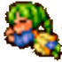
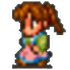
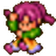
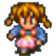
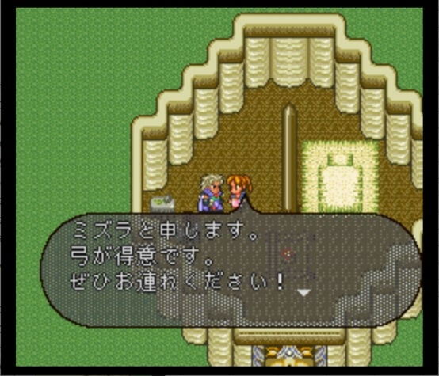
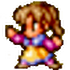
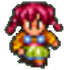
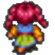

ノーマッド（女）
能力値
ノーマッド（女）は以下8名のキャラクタがいます。各キャラクタのステータス、初期技能、初期術法、閃きタイプは以下表の通りです。
| キャラ名 | 腕 | 器 | 魔 | 早 | 体 | LP | 理 | 術 | 魔＋理 | WH | JH | 初期技能 | 初期術法 | 閃 |
|---|---|---|---|---|---|---|---|---|---|---|---|---|---|---|
ファティマ | 15 | 18 | 18 | 17 | 13 | 8 | 23 | 18 | 41 | +2 | -5 | 斬 殴 射 | 地 | 弓 |
ベスマ | 16 | 17 | 18 | 16 | 15 | 9 | 12 | 30 | 30 | +1 | -6 | 殴 射 | 火 | 弓 |
アリア | 14 | 19 | 20 | 16 | 13 | 9 | 10 | 40 | 30 | +1 | -7 | 殴 射 | なし | 弓 |
ミズラ | 14 | 19 | 17 | 18 | 14 | 10 | 13 | 25 | 30 | +2 | -5 | 殴 射 | 地 | 弓 |
アズィーザ | 14 | 18 | 18 | 17 | 15 | 6 | 11 | 32 | 29 | +1 | -6 | 殴 射 体 | なし | 棍棒 |
ドニヤ | 15 | 19 | 19 | 16 | 13 | 10 | 13 | 31 | 32 | +2 | -7 | 殴 射 | なし | 剣2 |
ノーズハトゥ | 12 | 20 | 16 | 19 | 14 | 11 | 11 | 26 | 27 | +1 | -6 | 殴 射 | 風 | 弓 |
シャハラザード | 14 | 20 | 17 | 18 | 14 | 12 | 12 | 27 | 29 | +2 | -6 | 殴 射 | 地 | 弓 |
| キャラ名 | 腕 | 器 | 魔 | 早 | 体 | LP | 理 | 術 | 魔＋理 | WH | JH | 初期技能 | 初期術法 | 閃 |
※1 理：理力（隠しパラメータ）。冥術のペインのダメージに影響する。
※2 術：術威力（魔力 + max((魔力−理力), 0) × 2）。冥術以外の術、合成術のダメージに影響する。
※3 魔＋理：魔力＋理力。冥合成術の威力に影響する
※4 WH, JH：初期技能、初期術法に対するマスターレベルからの補正値
※5 技能：斬‥剣・大剣、突‥槍・小剣、殴‥斧・棍棒、射‥弓、体：体術
※6 閃：閃きタイプ。閃きタイプ毎の閃き可能な技の一覧はこちら
参考
殆どのキャラクタの器用さが高目に設定されており、弓の閃き適正を持つキャラクタが多いことがわかります（右のリンクのステータス一覧の「器」のところを見れば比較的高めに設定されていることがわかると思います）。また、全キャラ斧・棍棒・弓の技能に優れています。
しかし特徴的（というか、ノーマッド（女）の中では変異種的）なのは表の赤字部分。
ファティマは魔力＋理力の値がロマサガ2の中で最も高いキャラクターです。このため、ロマサガ2のリマスター版で登場する「陰陽師」を除けば、冥の合成術で最強の威力をたたき出すことができます。
しかし、そもそも冥合成術は威力がそんなに高くないのでそこまでダメージを出せるわけでもない。以下はファティマにサンドストーム（＋シャドウサーバント）を使わせてみた動画。
冥合成術最強の使い手ファティマであっても、冥合成術でカンストダメージを出したければ竜脈＋幻体戦士法に頼らざるを得ないと思います。
（下記動画参照）
上記動画のファティマのステータスと装備はこんな感じです。
アリアはノーマッド（女）の中では最高の術威力を有しており、下手な術士よりも高いダメージを出すことができます。アリアの術威力40という値は全キャラ中16位で、ホーリーオーダー（女）のアガタ、バルバラと同じ値です。
（参考：ステータス一覧。「術」のところを見れば術士としての適正が高いことがわかると思います）
ただし、上の表で術法が「なし」となっていることからもわかるように、メンバーに加えたときは全術レベル0です。術士として使う場合はイチから育てる必要があります。
ノーマッド（女）キャラクター名の由来は「千夜一夜物語（アラビアン・ナイト）」です。キャラクタ毎の由来は各キャラの項目を参照してください。
ここから先は、キャラクタ毎にロマサガ2、エンペラーズサガ（エンサガ）、インペリアルサガ（旧インサガ）、インペリアルサガエクリプス（インサガEC）、ロマサガRSでの各キャラクタについて見ていきます。
ファティマ

ステータス

名前の由来
千夜一夜物語に登場する、カイロの靴直し職人マアルフの妻の名前がファティマー／ファーティマ、だったり、王女ファーティマという名前が出てきたりするのでたぶんここがファティマの名前の由来なんだと思います。
参考：
- Wikipedia 千夜一夜物語のあらすじ：蜂蜜入りの乱れ髪菓子と靴直しの禍をまきちらす女房との物語（第959夜 - 第971夜） 靴直しのマアルフとその女房ファティマー
- Wikipedia 千夜一夜物語のあらすじ：王女ファーティマと詩人ムラキースとの恋の冒険
エンサガ
エンサガでは弓キャラとして実装。
原作のロマサガ2では公式イラストは無かったが、小林智美さんの描き下ろしイラストで実装された。
エンサガでファティマが使用できる技は以下の通り。
| 使用可能技 |
|---|
| ビーストスレイヤー |
| でたらめ矢 |
| アローレイン |
| バラージュシュート |
| 連射 |
参考までに、ロマサガ2のビーストスレイヤー、でたらめ矢、アローレイン、バラージシュートのエフェクトはこんな感じです。
参考：
- エンサガDB：機動 ファティマ(Sレア) 戦士詳細 | エンサガDB
旧インサガ
ストーリーには登場するものの、キャラクタとしての実装は無し。
参考：
インサガEC
未プレイなのでよく知りませんが、オリジナルイラストで実装された。

参考：【キャラ紹介】★４ ファティマ [魔][弓][ロマサガ２]
— インペリアル サガ エクリプス公式 (@imsaga_ec) March 7, 2020
ステップ地帯に生きる遊牧民「ノーマッド」の一人。ファティマをはじめとする一族の女性は、同族の男性たちと同じく大草原を守るためならば、弓や斧といった多彩な武器を駆使して立ち向かう覚悟を持っていた。 #インサガ #インサガEC pic.twitter.com/WETe4tpMWZ
ロマサガRS
ロマサガRSでは、2019年3月に開催された七英雄ピックアップガチャ ボクオーン編でノーマッド（女）が実装されました。
イラストはエンサガと同様のもの。ドットはロマサガRS用に新規に作られており、ロマサガ2のドットを踏襲して作られている。
【新スタイル紹介】
— ロマンシング サガ リ・ユニバース公式 (@romasaga_rs) March 21, 2019
ファティマ（『ロマンシング サガ２』より）
ステップの遊牧民"ノーマッド（女）"の一人。
弓矢による遠距離攻撃を得意とする。
「思い切り走り回れる広い草原はないのか？」#ロマサガRS pic.twitter.com/xqC3hnwcoa
| 使用可能技 |
|---|
| 狙い射ち |
| ビーストスレイヤー |
| 瞬速の矢 |
ロマサガRSの狙い撃ち、ビーストスレイヤー、瞬速の矢のエフェクトかこんな感じ。
ロマサガRSのホーム画面でタップした時のセリフ
ベスマ
ステータス
名前の由来
- ベスマ：不明
原作以外の実装なし
アリア

ステータス
名前の由来
- アリア：不明
原作以外の実装なし
 ミズラ


ステータス
名前の由来
- ミズラ：不明
原作以外の実装なし
アズィーザ
ステータス
名前の由来
千夜一夜物語の「アズィーズとアズィーザと美しき王冠太子の物語」に登場。
参考：
- アズィーザ：アズィーズとアズィーザと美わしき王冠太子の物語
原作以外の実装なし
ドニヤ

ステータス
名前の由来
千夜一夜物語の「ドニヤ姫と王冠太子の物語」に登場。
参考：
- ドニヤ：ドニヤ姫と王冠太子の物語
原作以外の実装なし
ノーズハトゥ
 ステータス
名前の由来
千夜一夜物語の「オマル・アル・ネマーン王とそのいみじき二人の王子シャールカーンとダウールマカーンとの軍物語」内の「ドニヤ姫と王冠太子の物語」に登場。
参考：
原作以外の実装なし
シャハラザード
ステータス
名前の由来
千一夜物語全体の主人公。
参考：
- Wikipedia 千夜一夜物語のあらすじ：シャハリヤール王と弟シャハザマーン王との物語
- Wikipedia シャハラザード：シャハラザード（シェヘラザード）
エンサガ
斧キャラとして実装
参考：
| 使用可能技 |
|---|
| ドライブエッジ |
| ヨーヨー |
| メガホーク |
| スカイドライブ |
次の動画はロマサガ2のヨーヨー、スカイドライブのエフェクトです。ドライブエッジはロマサガ2にはなかった技。エンサガ初登場？メガホークはロマサガ3の技。
ロマサガRS
ロマサガRSでも5年経ってやっとノーマッド（女）のSSスタイルが実装されました。
【新スタイル＆技・術紹介】
— ロマンシング サガ リ・ユニバース公式 (@romasaga_rs) October 25, 2023
シャハラザード（『 ロマンシング サガ２』より）
男たちがうまく獲物を誘い込んでくれたようね。
あいつは自分が獲物を狩っているつもりでいる。意識が前に集中していて、背中はがら空きだ。
自分は常に狩る側。その驕りが油断を生むんだ。#ロマサガRS pic.twitter.com/jq0f1rIhbM
陣形
ノーマッド（女）が所持している陣形は「ワールウインド」。前衛の3人に素早さ上昇と行動後防御効果が付与されます。

仲間にしたい
ノーマッド（女）はノーマッドの村の右下の家にいます。ボクオーンを倒した状態であれば、話しかければ仲間にすることができます。
皇帝にした時のセリフとか口調
ファティマ様、陛下
参考
- 小林智美さん公式サイト
- 小林智美さんウィキペディア
- RRPG ゲーム攻略サイト
- ろまさが2人名辞典
- コトバンク 千夜一夜物語
- Wikipedia 千夜一夜物語
- Wikipedia 千夜一夜物語のあらすじ
- Wikipedia シェヘラザード
- 【ロマサガ2】全クラス解説その3【SFC版】
- アラビアンナイト・第五夜